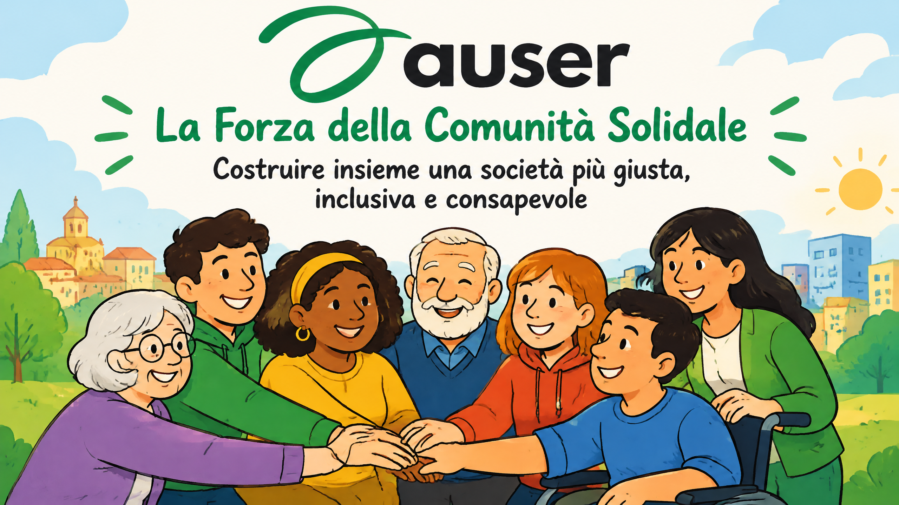

Auser rappresenta un'organizzazione impegnata nella realizzazione di progetti collettivi, con l'obiettivo primario di valorizzare ogni persona e le relazioni che la circondano. La nostra missione affonda le radici in principi fondamentali quali l'equità sociale, il riconoscimento e l'apprezzamento della diversità, la protezione dei diritti umani, nonché la creazione di nuove opportunità e la gestione consapevole dei beni che appartengono a tutti noi.
I Nostri Valori Fondamentali
In Auser, i nostri valori fondamentali guidano ogni aspetto della nostra missione e delle nostre attività. Questi valori riflettono il nostro impegno per la solidarietà, l'inclusione e il benessere della comunità.
Solidarietà
Siamo impegnati a sostenere chi è in difficoltà e a promuovere la coesione sociale, creando legami autentici tra le persone e rafforzando il tessuto comunitario.
Inclusione
Crediamo nell'importanza di accogliere e valorizzare le diversità, creando opportunità concrete per tutti, senza discriminazioni né esclusioni.
Partecipazione
Incoraggiamo la partecipazione attiva dei cittadini nella vita della comunità, convinti che ogni voce meriti di essere ascoltata e considerata.
Rispetto
Promuoviamo il rispetto reciproco e la dignità di ogni individuo, riconoscendo il valore intrinseco di ogni persona indipendentemente dalle sue condizioni.
Responsabilità
Ci assumiamo la responsabilità delle nostre azioni e delle conseguenze che ne derivano, operando con trasparenza e coerenza nei confronti della comunità.
Equità Sociale
Lavoriamo per garantire un accesso equo alle risorse, alle opportunità e ai servizi, riducendo le disuguaglianze e promuovendo una distribuzione più giusta dei beni comuni.
I Pilastri del Nostro Impegno
Promozione del Volontariato e della Solidarietà
Ci impegniamo a incentivare e sviluppare una cultura del volontariato autentico, sostenendo iniziative di promozione sociale e programmi educativi rivolti agli adulti. Particolare attenzione viene dedicata alla solidarietà a livello internazionale, con uno sguardo privilegiato verso le persone anziane e al rafforzamento dei legami tra generazioni diverse.
Miglioramento della Qualità della Vita
La nostra priorità è accompagnare le persone in un percorso di crescita personale e relazionale. Lavoriamo per elevare gli standard qualitativi della loro esistenza quotidiana, incoraggiando la pratica della solidarietà reciproca e creando ambienti dove ognuno possa sentirsi parte di una comunità.
Valorizzazione delle Capacità Umane
Crediamo fermamente nella dignità e nel potenziale di ogni individuo. Ci dedicheremo a identificare, proteggere e sviluppare le competenze cognitive e operative di ciascuno, anche quando queste risultino limitate, riconoscendo che ogni persona ha qualcosa di prezioso da offrire.
Costruzione di Reti Territoriali
Promuoviamo la creazione di strutture associative e servizi innovativi a livello locale, pensati per supportare le responsabilità familiari e favorire relazioni di buon vicinato. Questo lavoro si sviluppa in stretta collaborazione con le istituzioni pubbliche, creando sinergie virtuose.
Cittadinanza Attiva e Partecipazione Consapevole
Vogliamo stimolare una partecipazione consapevole e responsabile delle persone alla vita democratica della comunità locale. Incoraggiamo il coinvolgimento nei servizi pubblici e nella tutela dei beni comuni, sia culturali che ambientali.
Rigenerazione delle Comunità Locali
Il nostro obiettivo finale è rinvigorire e rinnovare i tessuti comunitari locali, trasformandoli in realtà autenticamente solidali, aperte alla pluralità di voci e pienamente inclusive. Vogliamo comunità dove la diversità sia una ricchezza.
Auser: Ogni gesto conta: insieme costruiamo una società più giusta, consapevole e umana, un passo alla volta.